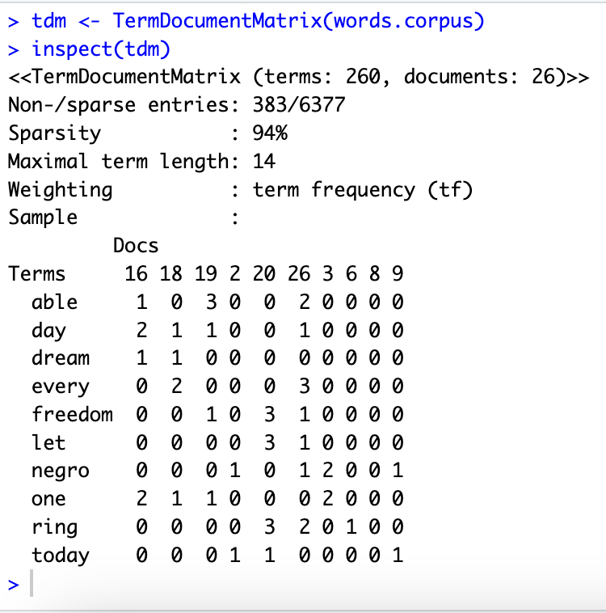
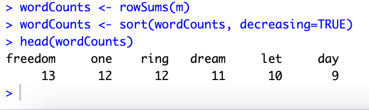
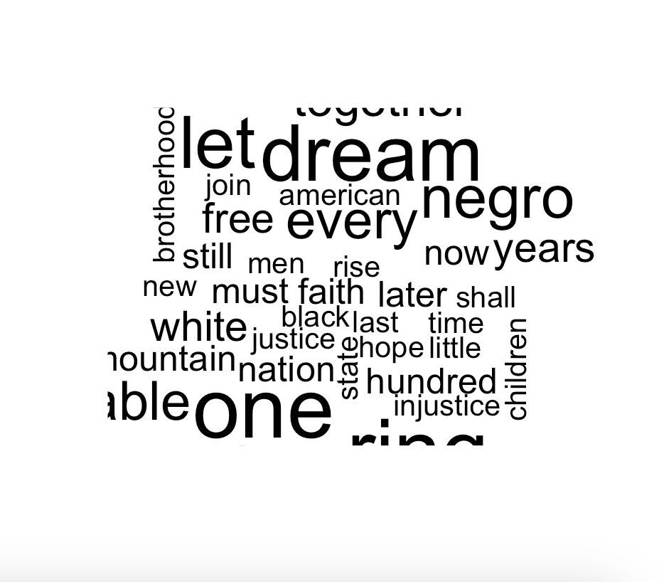
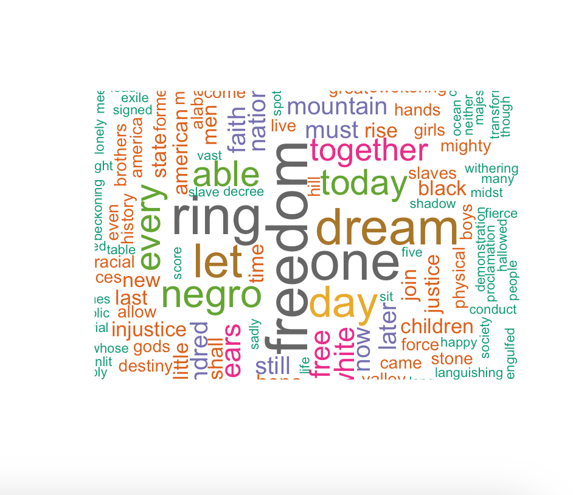
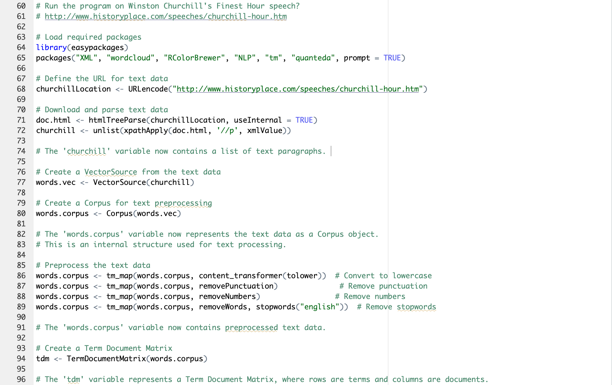
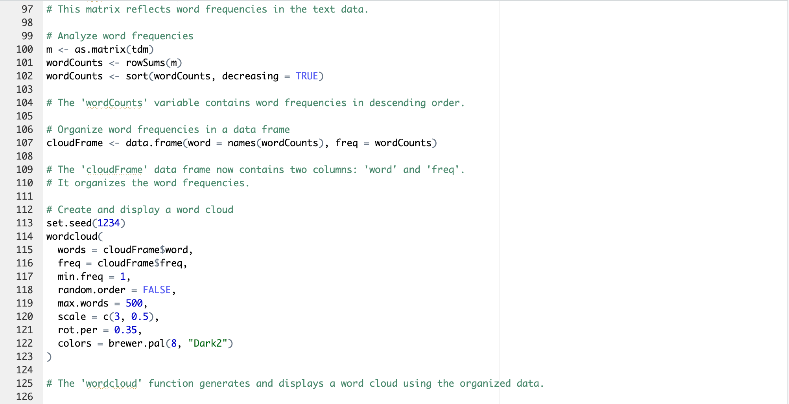
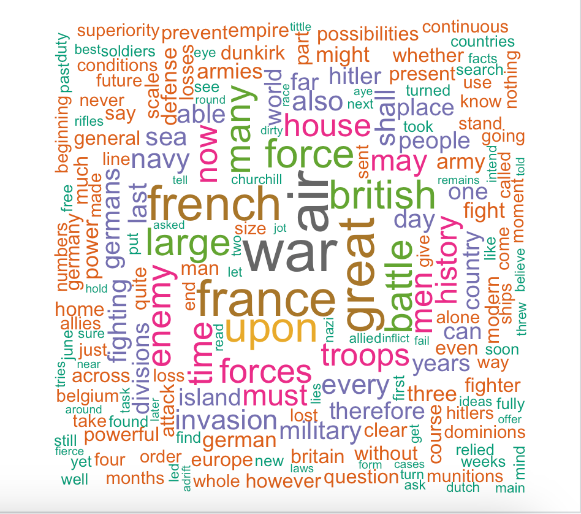
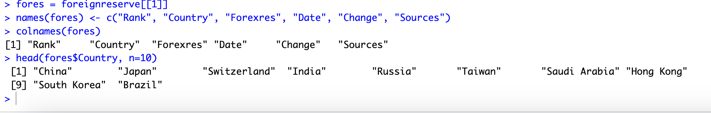
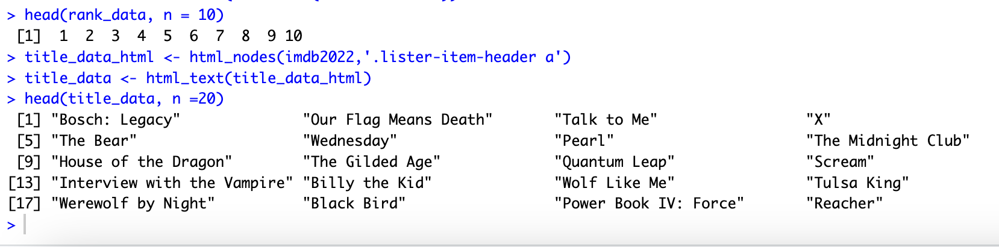

1 + 1[1] 2The textmining01.r code is a script for performing text mining and generating a word cloud from downloaded text data regarding Martin Luther King Jr.’s “I have a Dream” speech. The script downloads data using the “htmlTreeParse” function and stores it as a variable. The text is then pre-processed and vectorized, with the text being converted to all lower case, number and punctuation stripped away, and a matrix formed to represent the frequencies. The matrix is shown below:

The “wordcounts” variable is then used to order these frequencies in descending order, shown below:

With this, we can then formulate Word Clouds with our processed text data. The larger the word is presented in the Word Cloud, the more frequent it is presented in the speech.
 
Next, we will conduct a similar analysis on Winston Churchill’s speech “The Finest Hour”. We will use the following full script to analyze the text.


The Word Cloud is presented below:

Here we can see from our text analysis that words such as “war”, “france” and “french”, and “great” are very frequent in the speech.
This script analyzes text from a Wikipedia page, and uses the package “rvest” for web scraping.
It uses “read_html” to read the HTML code and stores it as a variable under the name “wikiforreserve”. The class is then checked to make sure everything is processed and stored correctly.
The script then uses XPATH to extract data from the HTML code and stores the data under the “foreignreserve” variable. The columns are then renamed in the data frame, and displayed. The first 10 entries are shown below:

The variable “rank” in this script is used to represent the ranks of the countries in the table, such as 1st, 2nd, or 3rd. The variable “Date” represents dates commonly used the in the data frame. We finally use the “stringr” package to clean up the “Date” variable and save the cleaned data frame as its own CSV file titled “fores.csv”.
This R script scrapes data from an IMDb webpage and splits it into two data frames, one for ranking data and one for title data. The script uses the “rvest” package for web scraping.
It uses “read_html” to scrape an IMDb webpage consisting of data from January 1, 2022 to January 1, 2023. This information is then stored in the variable “imdb2022”.
The data is then extracted as rank data and title data using the “html_nodes”, which pulls information from the IMDb page. The script then displays the first 20 entries in the Title Data, which is presented below:
